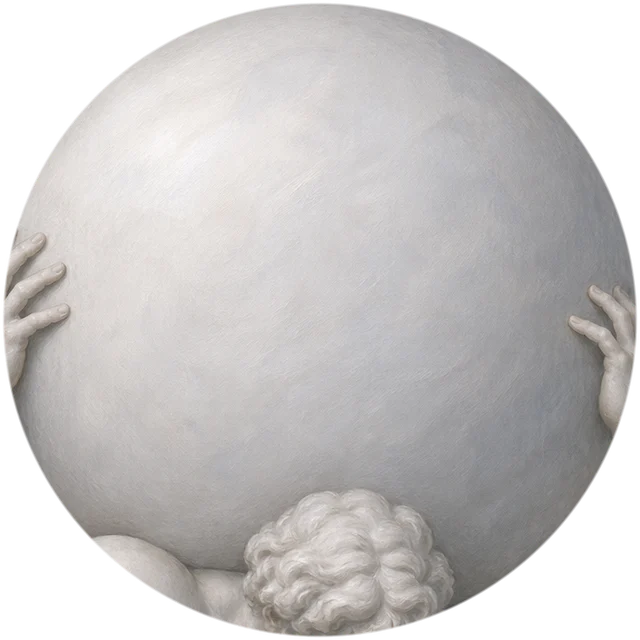
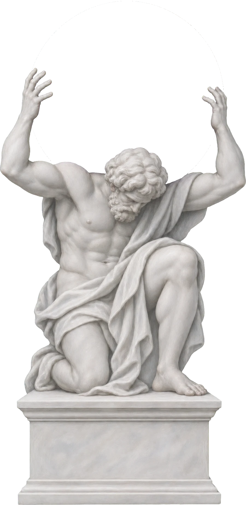

Angel capital for founders of exceptional ability and character.
Lantern is an angel-stage venture capital group.
We write first checks and open our network across the capitals of the world.


Our Network
Eleven cities.
Six kinds of capital.
Wherever you build next, our network is already there.
Stay in touch
Fund 00 is forming.
Leave your email to hear first when applications and the network open.